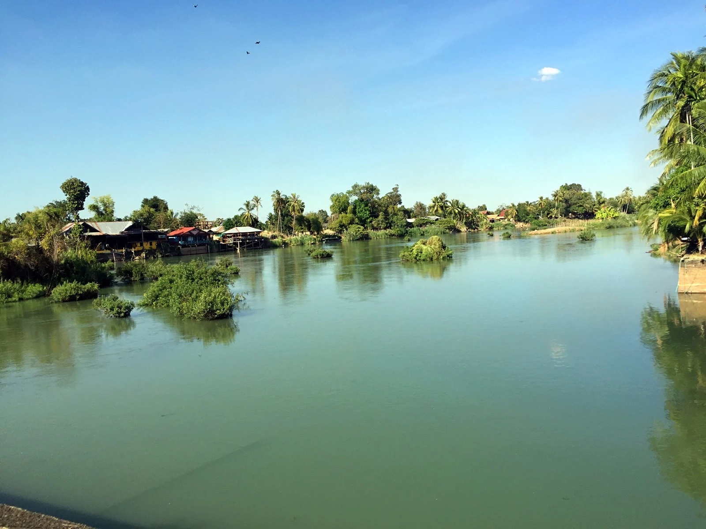
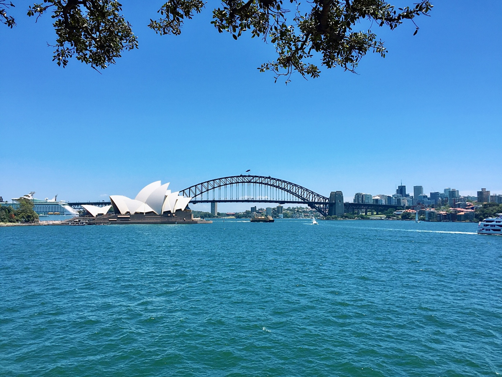
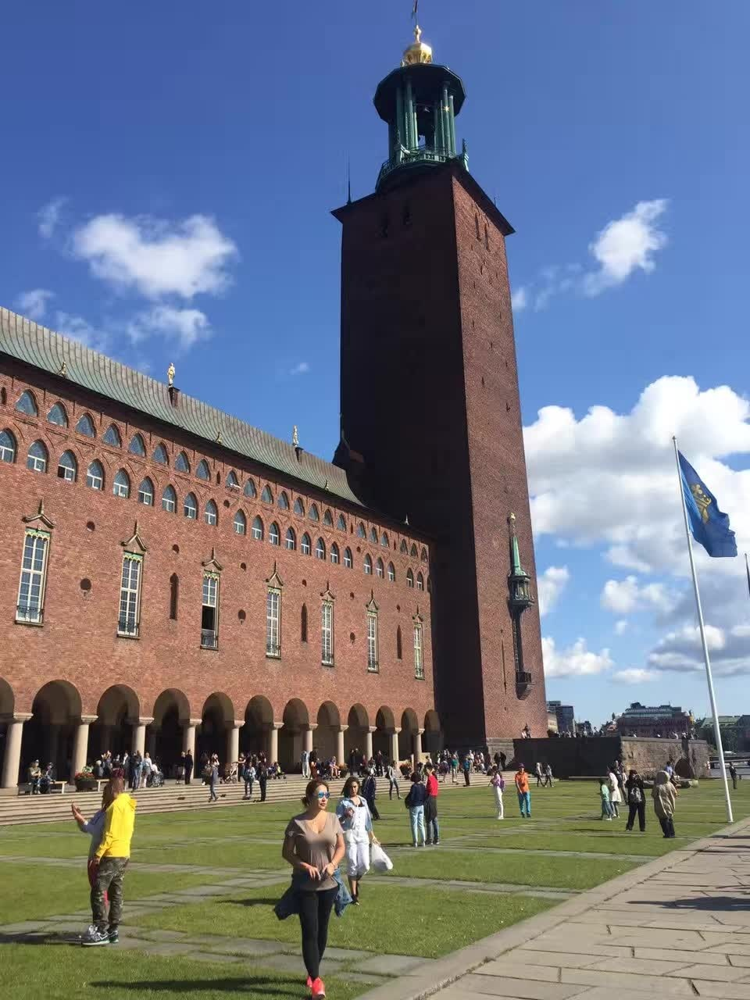
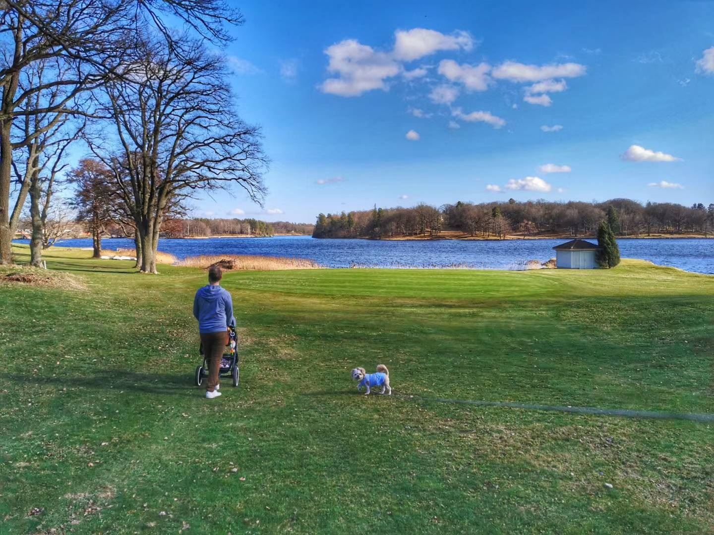
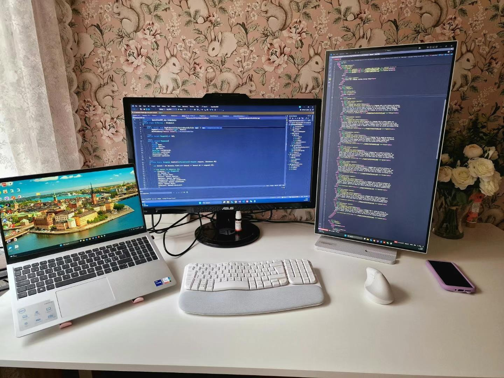
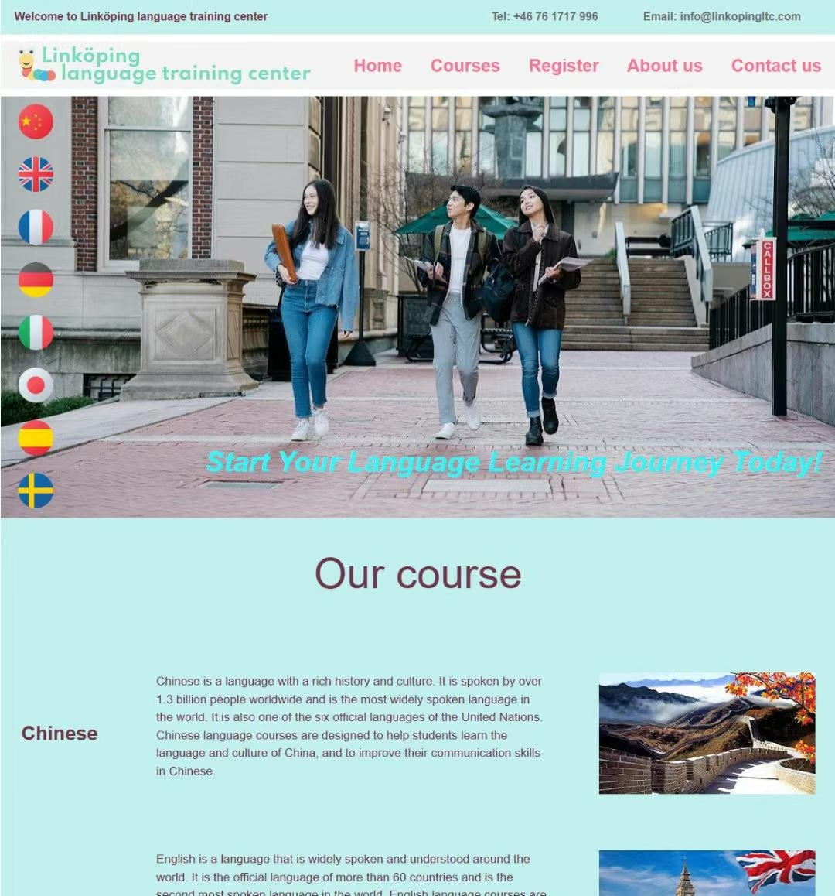
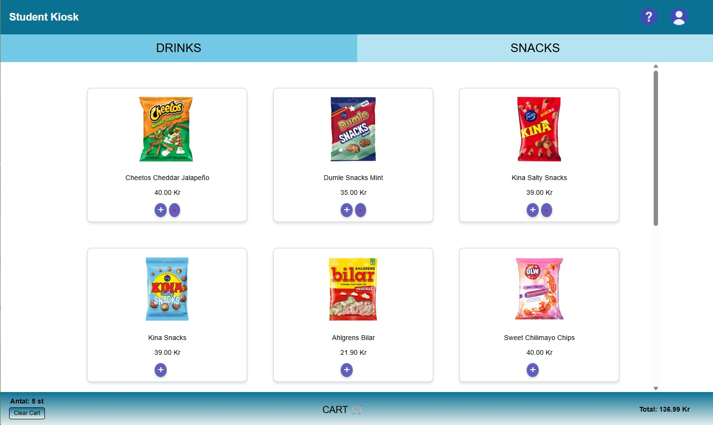
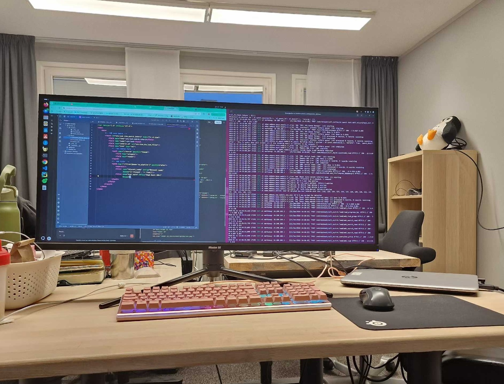
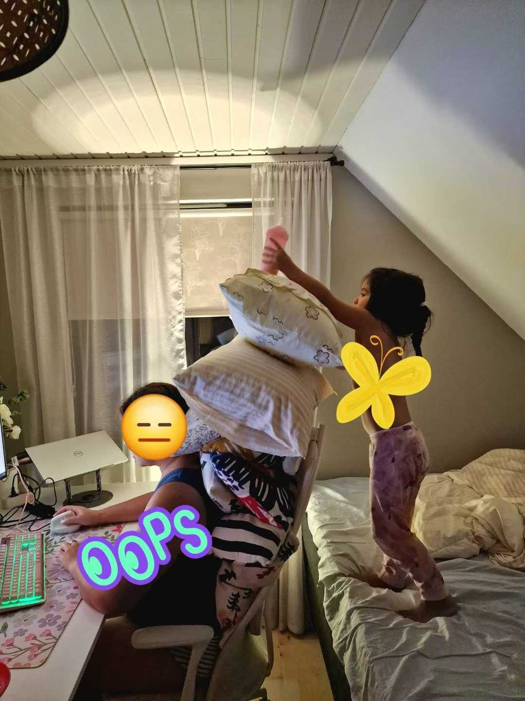

My Gallery
A collection of moments and creations that are meaningful to me.

Where Our Story Began
Cambodia, 2015. We were both backpackers when we met here. This place became the beginning of a new chapter in my life.

Backpacking in Australia
Australia, 2016. We continued our journey together as backpackers and spent time travelling and discovering a new country.

My First Time in Sweden
Stockholm, Sweden. This was my first visit to Sweden and one of my first experiences of the country that would later become my home.

A New Life in Sweden
After moving to Sweden, my life changed completely. I started building a new home and family life while adapting to a new country.

Starting My Programming Journey
My study space at home. This is where I spent many hours learning programming and working on projects during my .NET studies.

My First Website
One of the first static websites I created while learning HTML and CSS. It was simple, but it was an important first step in learning web development.

Learning Agile Development
A simple kiosk application developed by a team of nine students. The main purpose of the project was to learn how to work together using an agile development process.

My First IT Internship
My first experience working in an IT company. It gave me the opportunity to work with real development tasks and experience a professional development environment.

Studying with Family Life
Studying at home does not always mean a quiet workspace. Balancing my studies with family life has been an important part of my journey.